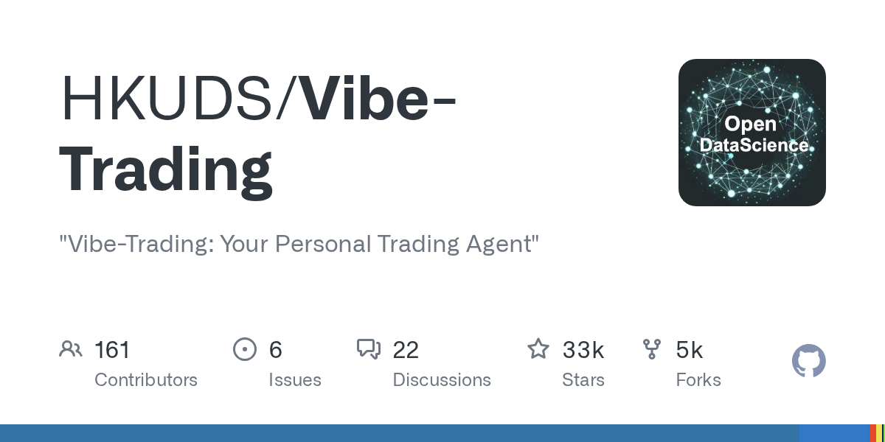
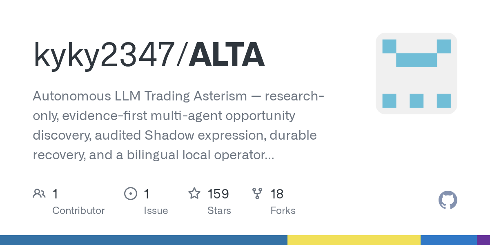
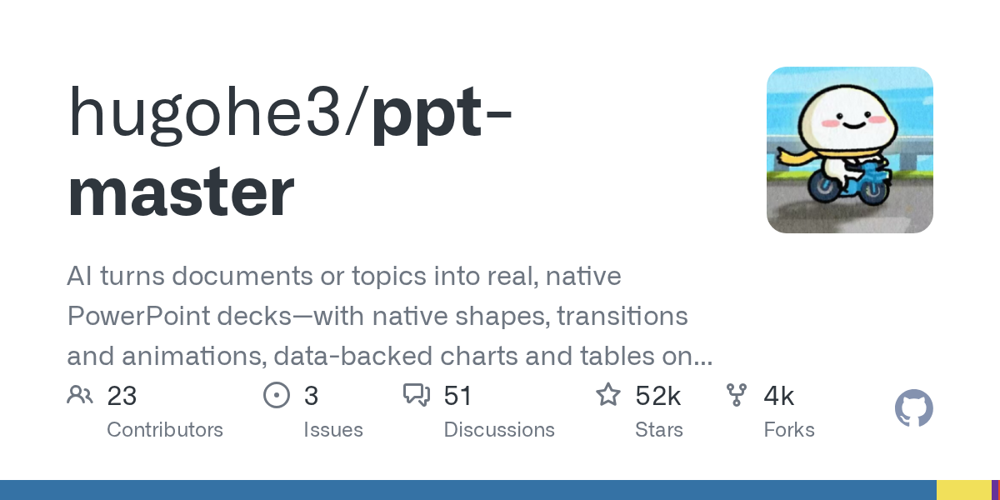
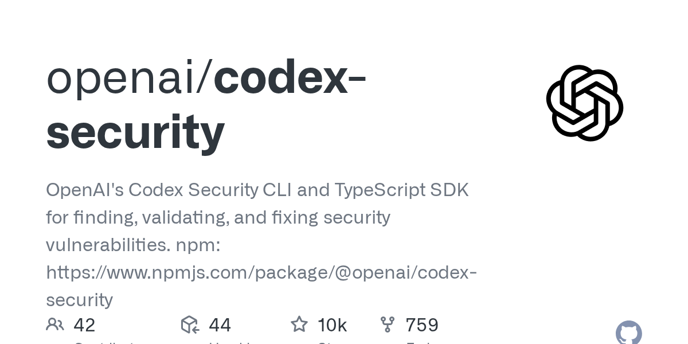
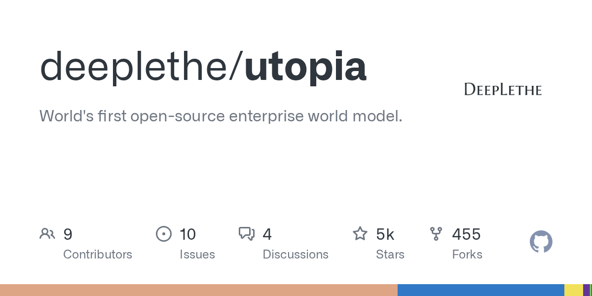

05 에이전트·툴링
문서에서 바로 파워포인트 초안 만들기
“이 저장소는 결과물을 이미지가 아닌 네이티브 PowerPoint로 만든다고 내세운다.”
Weekly GitHub Brief
이번 주에는 에이전트 도구가 ‘데모용 대화’보다 작업 흐름을 끝까지 맡는 쪽으로 옮겨갔다. 문서에서 PowerPoint 초안을 만들거나, 코드 보안 점검을 CLI로 돌리고, Claude Code 운영 팁을 정리한 저장소가 함께 눈에 들어왔다. 금융·트레이딩 쪽에서는 개인 트레이딩 에이전트의 운영 결함을 보완하고, 증거부터 따지는 멀티에이전트 연구 콘솔처럼 판단 근거를 앞세운 저장소가 늘었다. 인프라 쪽에서는 자체 호스팅형 트레이딩 OS와 사내 지식·시계열을 묶는 모델 지향 저장소가 보였고, 공개 범위를 줄이면서 내부 데이터와 연결하려는 흐름이 강했다. 사내에서는 문서 초안 생성처럼 결과를 바로 눈으로 확인할 수 있는 에이전트 작업부터 먼저 시험해 볼 만하다.

Editor's Pick
05 에이전트·툴링
“이 저장소는 결과물을 이미지가 아닌 네이티브 PowerPoint로 만든다고 내세운다.”
08 인프라·런타임
“이 저장소는 엔터프라이즈 world model이라는 표현을 전면에 내건다.”
03 주요 릴리스
“이번 릴리스 노트 발췌에는 새 기능이나 삭제 기능보다 배포 패키지와 요구 환경이 중심으로 적혔다.”
이번 주 가장 뜨거웠던 저장소 하나를 골랐습니다. 아래 섹션에도 그대로 실려 있습니다.
shanraisshan/claude-code-best-practice
Claude Code를 팀 작업에 맞게 쓰는 법을 모은 큐레이션 저장소다.
“이 저장소는 공식 문서처럼 한 기능을 설명하기보다 커뮤니티 실천법을 한곳에 묶는다. command → agent → skill 패턴을 구현 예시와 함께 보여 준다. /weather-orchestrator를 완성형 예제로 앞세운다.”
★ 65,665HTMLMIT 사내 사용 가능최근 활동 09.06

지난 7일 동안 스타가 빠르게 늘었거나 새로 등장해 주목받는 저장소입니다.
HKUDS/Vibe-Trading
개인용 트레이딩 에이전트 저장소다.
“Vibe-Trading은 개인용 트레이딩 에이전트 저장소다. 사용자는 한 도구 안에서 시장 데이터를 조회하고 전략을 시험할 수 있다. 웹 화면과 API, MCP를 함께 제공해 연결 경로를 넓혔다. 비유하면 시세판, 리서치 메모, 모의투자 노트를 한 책상에 모아 둔 업무 도구에 가깝다.”
★ 32,733PythonMIT 사내 사용 가능릴리스 v0.1.14 (08.20)최근 활동 09.06

kyky2347/ALTA
증거 우선 멀티에이전트 트레이딩 연구 시스템이다.
“여러 에이전트가 독립적으로 신호를 찾고, 찬반을 겨루며, 위험 감사를 통과한 안만 Shadow 장부에 남긴다. 운영자는 이 과정을 이중 언어 콘솔에서 끝까지 추적할 수 있다. 비유하면 애널리스트팀, 리스크팀, 집행 승인 절차를 한 실험실 안에 축소해 놓은 형태다.”
★ 159PythonApache-2.0 사내 사용 가능릴리스 v0.25.0 (08.27)최근 활동 09.05AGENTS.md

이번 주 안에 정식 릴리스를 낸 프로젝트의 의미 있는 버전 변화입니다.
Fincept-Corporation/FinceptTerminal
시장 분석, 투자 조사, 경제 데이터 탐색을 묶은 데스크톱 금융 터미널이다.
“이번 릴리스 노트 발췌에는 새 기능이나 삭제 기능보다 배포 패키지와 요구 환경이 중심으로 적혔다. 앱은 네이티브 C++20 금융 터미널로 소개했고, Qt6와 임베디드 Python, 50개 이상 화면을 내세웠다. 업그레이드 시에는 운영체제와 CPU 조건을 먼저 확인해야 한다.”
★ 31,087C++미표기 확인 필요릴리스 v4.5.0 (09.01)최근 활동 09.01

OpenByteInc/QuantDinger
자체 호스팅형 AI 트레이딩 운영체제다.
“시장 조사, Python 전략 개발, 서버 측 백테스트, 모의·실거래, 모니터링을 한 플랫폼에 담았다. 웹, 모바일 H5, 사람용 API, Agent Gateway, MCP 접근도 지원한다. 비유하면 리서치 도구와 주문 실행기, 운영 대시보드를 한 건물 안에 넣은 서비스 틀에 가깝다.”
★ 11,367PythonApache-2.0 사내 사용 가능릴리스 v5.0.26 (09.03)최근 활동 09.04

에이전트 프레임워크, MCP 서버, 코딩 보조, LLM 앱 개발 도구입니다.
hugohe3/ppt-master
문서나 주제만 넣으면 실제 PowerPoint 파일을 만드는 도구다.
“이 저장소는 결과물을 이미지가 아닌 네이티브 PowerPoint로 만든다고 내세운다. 이번 릴리스에서는 네이티브 차트가 작성된 SVG를 항목별로 따라가도록 바꿨다. 막대 순서와 점 표시, 점별 색상, 영역 채우기, 선 시작 위치 같은 요소도 SVG에서 반영한다.”
★ 52,339PythonMIT 사내 사용 가능릴리스 v6.3.0 (09.05)최근 활동 09.05AGENTS.md

openai/codex-security
코드의 보안 취약점을 찾고, 검증하고, 수정까지 돕는 CLI와 TypeScript SDK다.
“이 저장소는 스캔만 하는 데서 멈추지 않고 결과 저장, 중복 판정, 재검토까지 한 흐름으로 묶는다. findings 서비스는 스캐너와 같은 ghcr.io/openai/codex-security 이미지를 쓴다. 결과와 임베딩은 SQLite에 저장한다.”
★ 10,491TypeScriptApache-2.0 사내 사용 가능릴리스 npm-v0.1.25 (09.02)최근 활동 09.06예제AGENTS.md

shanraisshan/claude-code-best-practice
Claude Code를 팀 작업에 맞게 쓰는 법을 모은 큐레이션 저장소다.
“이 저장소는 공식 문서처럼 한 기능을 설명하기보다 커뮤니티 실천법을 한곳에 묶는다. command → agent → skill 패턴을 구현 예시와 함께 보여 준다. /weather-orchestrator를 완성형 예제로 앞세운다.”
★ 65,665HTMLMIT 사내 사용 가능최근 활동 09.06
추론 서빙, 런타임, 양자화, GPU 커널, 벡터 DB 등 모델을 돌리는 바탕입니다.
deeplethe/utopia
오픈소스 엔터프라이즈 world model을 내세운 저장소다.
“이 저장소는 엔터프라이즈 world model이라는 표현을 전면에 내건다. 주제어 구성을 보면 단순 RAG보다 그래프 구조와 시계열 지식을 함께 다루려는 점이 다르다. PostgreSQL과 pgvector, ontology, bitemporal 같은 키워드가 함께 붙어 있다.”
★ 5,049RustApache-2.0 사내 사용 가능최근 활동 09.06
